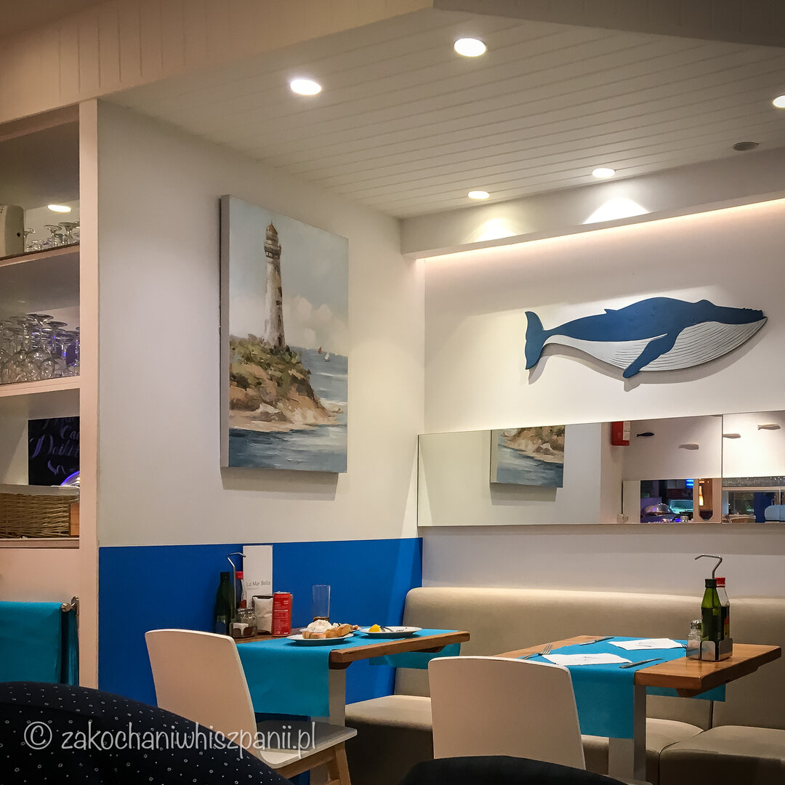
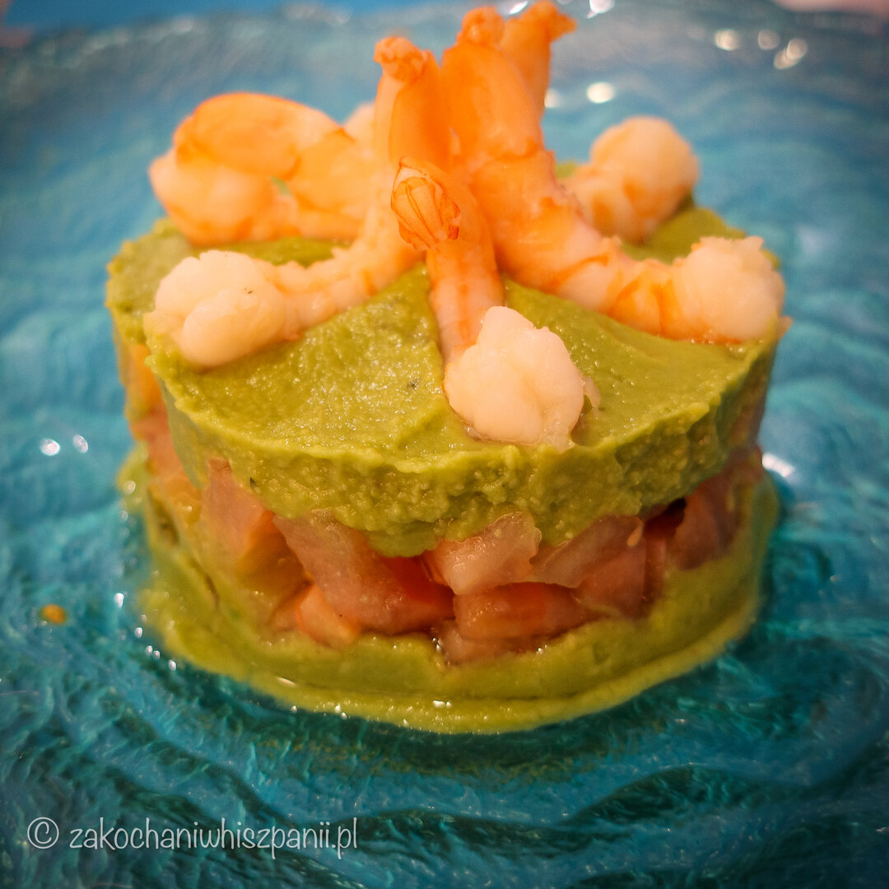
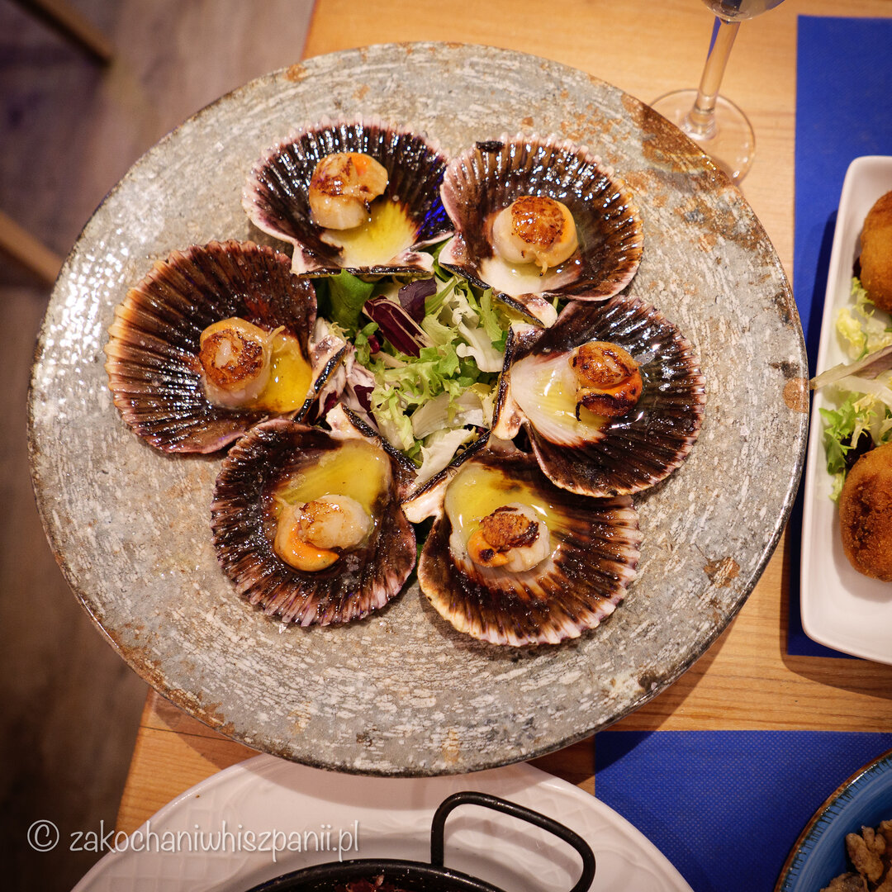
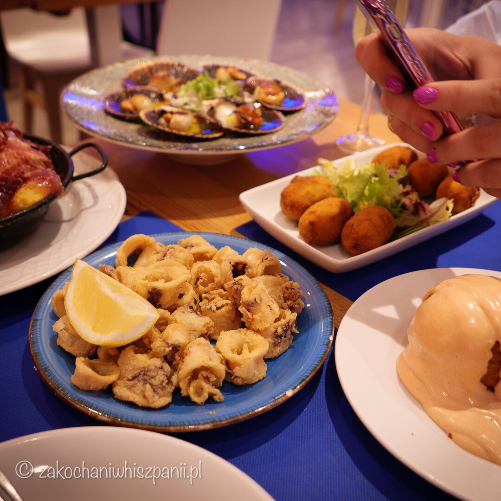
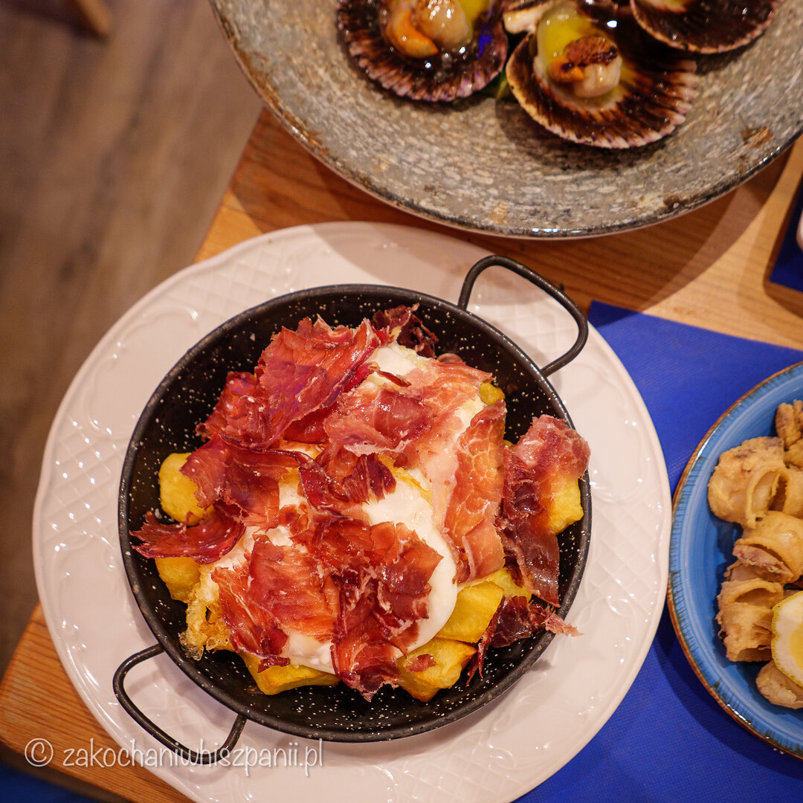
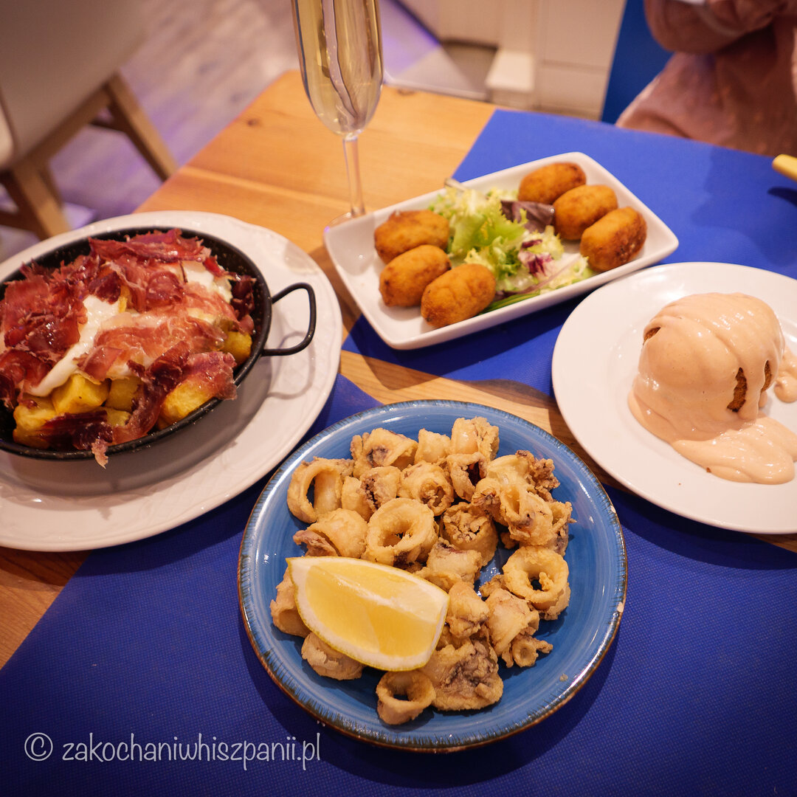

Restauracja La Mar Bella
Gdzie zjeść w Barcelonie?
Jeśli będziesz w Barcelonie w okolicy plaży Bogatell lub Mar Bella, to koniecznie musisz tu wejść, choćby na smaczne tapas i kieliszek hiszpańskiej cavy. W okolicy deptaka Rambla Poblenou znajduje się dużo innych lokali gastronomicznych i to tylko kwestia przypadku, że odkryliśmy taką perełkę na restauracyjnej mapie Barcelony.

Restauracja La Mar Bella zlokalizowana jest w dzielnicy Poblenou, przy ulicy Carrer del Taulat, 81. Najlepsze przegrzebki, jakie do tej pory udało się nam zjeść w Hiszpanii to te, które możesz zamówić właśnie w tym miejscu.
W środku lokal wygląda dosyć niepozornie. Serwowana jest tu oczywiście kuchnia hiszpańska. Wystrój nowoczesny w morskim stylu, w kolorystyce biało niebieskiej.
Co zjeść w restauracji La Mar Bella w Barcelonie?
Kalmary, przegrzebki, patatas bravas, a może tatar z awokado i krewetkami?
Podczas kilku wizyt, skosztowaliśmy kilka pozycji z menu La Mar Bella. Zazwyczaj zamawiamy kilka różnych tapas i nimi się dzielimy. Najbardziej w mojej pamięci i Krzysia utkwił smak tatara z awokado, oraz przegrzebek. No po prostu to są takie smaki, dla których z miłą chęcią wracamy do Barcelony choćby na jeden dzień.

Tatar podany jest z awokado, krewetami i pomidorami. Awokado maślane, miękkie, lekko tłuste, a salsa pomidorowa ze smacznych, dojrzałych pomidorów palce lizać i do tego krewetki. Jakość produktów i ich świeżość jest wyczuwalna w każdym kęsie, również w kolejnych daniach.

Zamburinas a la plancha, to mniejsza odmiana przegrzebek. Podane na sałacie, w muszlach, sześć ciepłych przegrzebek w maślano-oliwnym sosie. Bajka!!!
Calmares andaluza, czyli smażone kalmary. Podane na ciepło, skropione sokiem z cytryny i tu znów się powtórzę bardzo smaczne.

Bomba con salsa picante, nie było najgorsze, jednak domowe krokiety hiszpańskie z szynką jamon (croquetas de jamon), które również tu zamówiliśmy, były dla nas smaczniejsze, bardziej doprawione.
I jeszcze huevos rotos con jamon iberico, bardzo sycące danie, idealne dla zgłodniałego podróżnika :) Dobrej jakości, przepyszna szynka, jajko i ziemniaki, takie proste składniki, ale jaki smak.

Nasza opinia i przemyślenia po wizycie w La Mar Bella
Za każdym razem będąc w restauracji La Mar Bella, to co zamawialiśmy, było bardzo smaczne. Wszystko oczywiście jak dla nas idealnie doprawione. Wielkość porcji w sam raz, spokojnie można się najeść :) Obsługa, również zasługuje na pochwałę. Jeśli będziemy w Barcelonie, a pewnie tu za jakiś czas wrócimy, chętnie odwiedzimy restaurację La Mar Bella.

Trochę zastanawia nas ocena restauracji w internecie. Szczerze mówiąc, za pierwszym razem przed wejściem do restauracji La Mar Bella nie sprawdziliśmy opinii o tym lokalu. Na miejscu tak jak wcześniej pisałam, wszystko było w porządku. Gdybyśmy liczyli się tylko z opiniami z internetu, nigdy nie znaleźlibyśmy tej restauracji z dobrą kuchnią. Zawsze znajdzie się choćby komentarz w stylu “za drogo”. No ale przecież wchodząc do restauracji czy baru dostajesz menu i widzisz ceny, stosowanie ich jako jedyne kryterium jest trochę krzywdzące.
Jeśli byłaś/eś w Barcelonie i masz jakieś ciekawe wspomnienia kulinarne, podziel się z nami w komentarzu swoimi ulubionymi restauracjami/barami w Barcelonie. Chętnie je sprawdzimy podczas następnego wyjazdu.
Carrer del Taulat, 81, 08005 Barcelona, Hiszpania
Najnowsze wpisy


Tagi